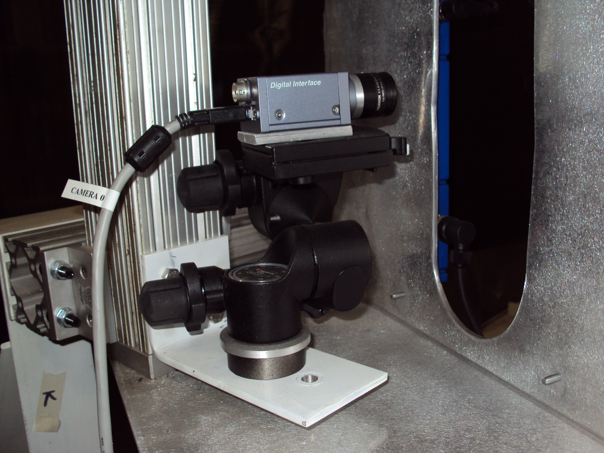

Welcome to my machine vision website. This website introduces industrial machine vision and its applications in automated inspection.
Machine vision uses cameras, computers, and image processing software to inspect products and measure objects in industrial applications.

Machine vision systems can perform measurements, detect defects, and verify product quality.